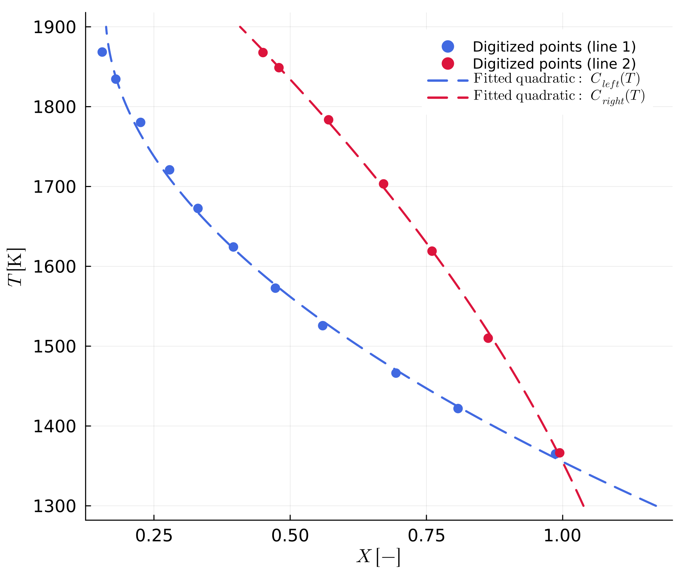

Digitizing the phase diagram and extracting coefficients
Phase diagrams
The chemical Stefan problem needs the equilibrium composition of each phase at the interface as a function of temperature (see The Stefan Problem) — this is exactly what a phase diagram encodes for how these compositions enter the interface condition. At any given temperature, two reaction lines bound the two-phase field: one gives the composition of the left phase, the other the composition of the right phase, each fit as a quadratic function of temperature (Eq. 1). The user supplies the resulting coefficients a, b, c for both lines as input before the model starts.
Work flow
We used the PlotDigitizer.jl package in Julia [8] (https://github.com/AnStroh/PlotDigitizer.jl, version v0.1.0) to digitize the phase diagram; a shortened copy ships in additional_codes/digitizePlot.jl. It lets you click points along the two reaction lines and export their X-T coordinates, which are then fit to obtain the coefficients below. Here is a short guideline.
digitizePlot.jl uses GLMakie for the interactive image viewer. GLMakie is not a dependency of MovingBoundaryMinerals.jl itself (it is heavy and only needed for this optional, interactive digitizing step), so you need to install it yourself first: using Pkg; Pkg.add("GLMakie"). FileIO and DelimitedFiles, the other two packages digitizePlot.jl uses, are already part of MovingBoundaryMinerals.jl's dependencies.
- Define the path to the image of the phase diagram (
.pngor.jpgfile) as a variable. It is important that the image only shows the phase diagram (likeexamples/Examples_phase_diagram/Ol_Phase_diagram_without_framework.png) and has no border. The phase diagram should show the composition on the x-axis and the temperature on the y-axis. - Define the limits of the axes in
X_BCandY_BC.Y_BC(temperature) must be in K, even though the source phase-diagram image itself is very likely to have its axis printed in °C (the usual convention for this kind of figure) -digitizePlotonly ever sees pixel coordinates from the image and has no idea what unit its axis is labelled in, so it takes whatever numbers you give it inY_BCat face value. Convert the image's printed axis limits to K yourself before typing them in (e.g.examples/Examples_phase_diagram/Ol_Phase_diagram_without_framework.pngspans 1000-1600°C, so itsT_BCinadditional_codes/digitizePlot.jlis(1273.0, 1873.0), not(1000.0, 1600.0)). Typing the printed °C limits directly in would silently digitize and fit everything in the wrong unit, one that happens to look reasonable (a few hundred to a couple thousand) right up untilcompositionis called downstream with a genuine Kelvin temperature. - Run
digitizePlot(X_BC, Y_BC, file_name)to set or delete points on the two reaction lines, switch between lines, and export the digitized X-T coordinates to CSV. - Use
CalculateReactionLine.jl(also inadditional_codes) to fit the digitized points via least squares to
\[X(T) = a + b T + c T^2 \qquad (1)\]
where X is the composition at the phase transition, T is the temperature in K, and a, b, c are the coefficients of the quadratic equation (in that order — a is the constant term, c the T² coefficient). The fitted coefficients are written to a CSV file (see examples/Examples_phase_diagram/Coefficients_Reaction_lines.csv for the file used e.g. by example D1) and can be loaded with coeff_trans_line and evaluated at any temperature with composition.
Here is that exact file: the two reaction lines digitized from D1's phase diagram (digitized_data_1.csv/digitized_data_2.csv), each with its fitted quadratic evaluated with composition over the digitized temperature range.

CSV files with fewer, carefully placed points tend to give a more accurate quadratic fit near the ends of the composition range (X close to 0 or 1) than files with many densely digitized points. Always check the fit against the original phase diagram near its boundaries.
This step can be skipped entirely if the coefficients a, b, c are already known: in that case they can be entered directly, e.g. via eq_values in the example scripts.